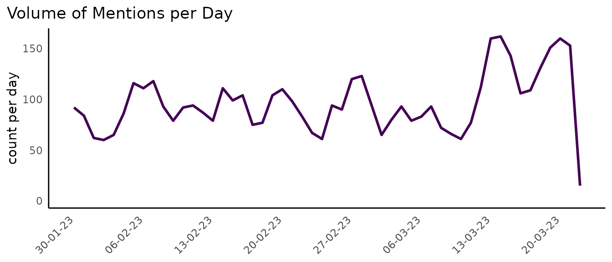
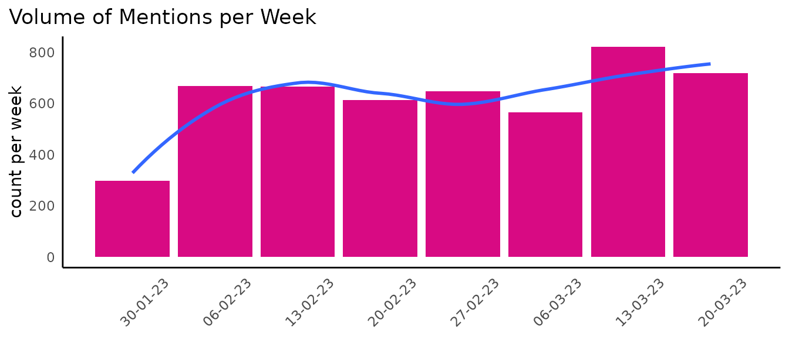
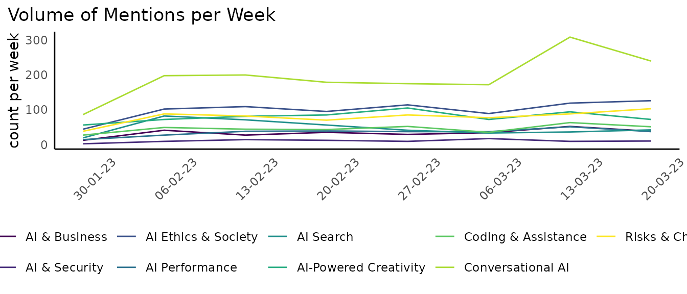
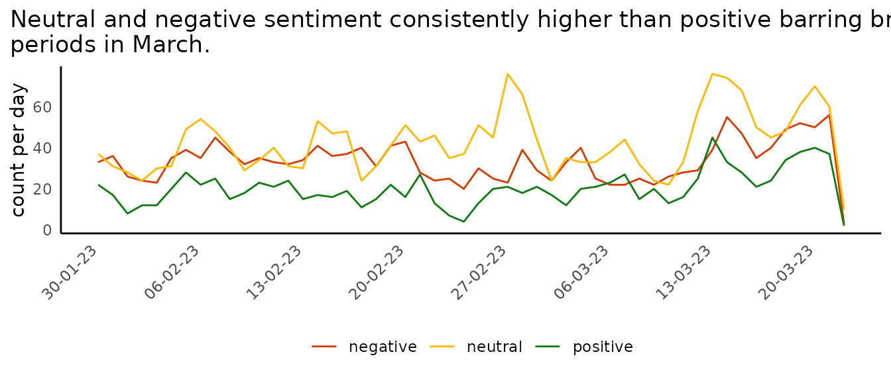
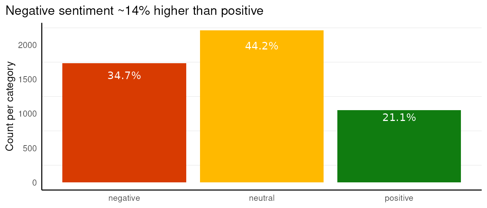
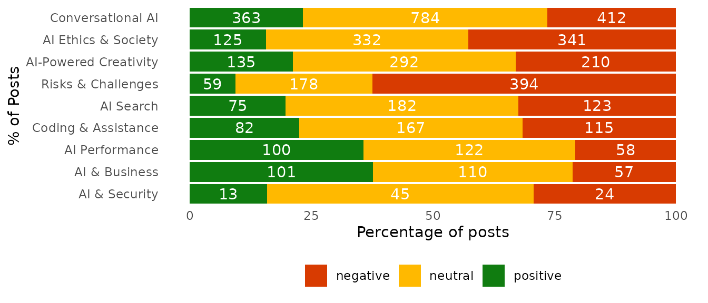
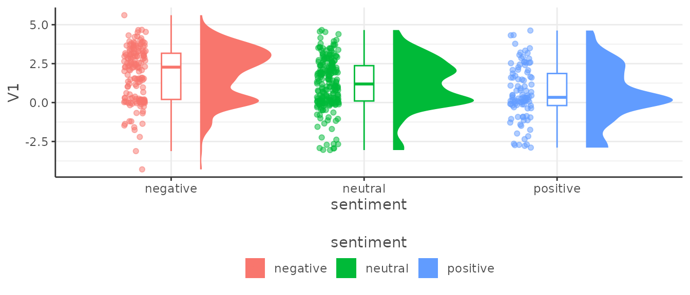
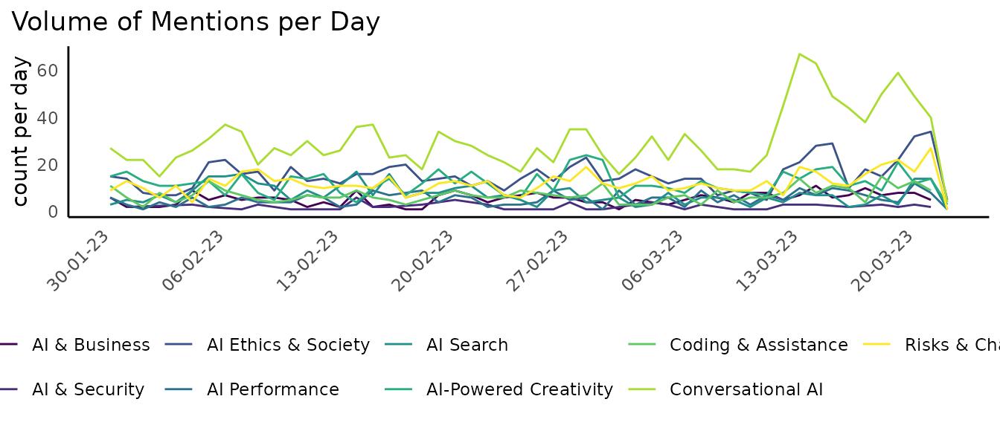
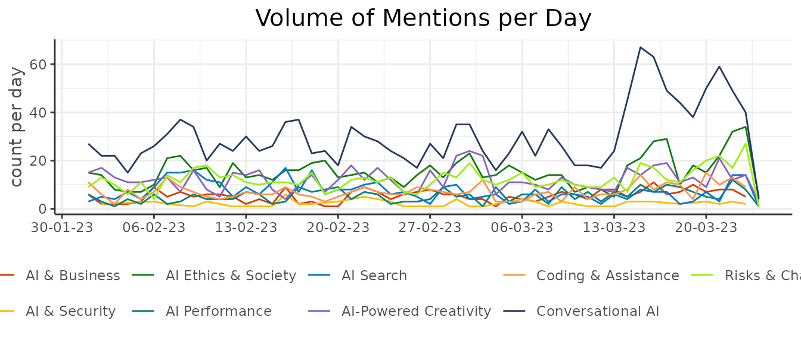
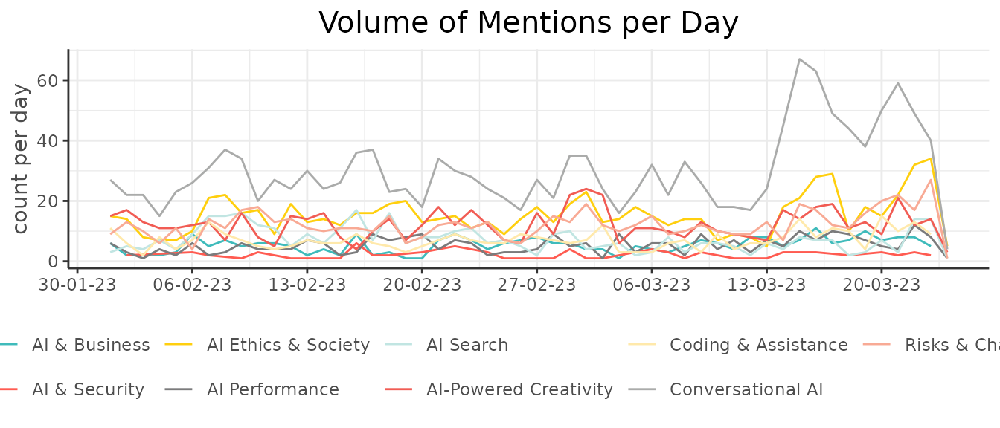

Plotting & Theme Functions
Source:vignettes/plotting_theme_functions.Rmd
plotting_theme_functions.Rmd
library(ggplot2)
#> Error in get(paste0(generic, ".", class), envir = get_method_env()) :
#> object 'type_sum.accel' not found
library(DisplayR)
library(dplyr)
library(tidyr)Plotting Functions
When working on research projects or Understand phases, there is often a set of charts you will create at the beginning, and then at multiple points throughout the project. These charts will help you perform common exploratory data analysis (EDA) tasks to better understand your data and identify areas of investigation. Some of these charts sit naturally in other packages such as:
- {ParseR} - descriptive plots of text distributions e.g. Pairwise Correlations, n-gram plots, Weighted log-odds
- {SegmentR} - plots for topic modelling outputs e.g. top terms
- {ConnectR} - network visualisations e.g. Retweet network, mention network
Other plots which do not have a clear and obvious location, e.g. sentiment distributions, volume over time etc. will sit here in {DisplayR}. They most likely will not be the centrepiece of a delivery, and they should not be used as a substitute for thinking about the problem at hand and creating bespoke graphics when called for*. They do however represent valuable efficiency gains in the EDA workflow, and prime clients for a Capture Intelligence deck or delivery.
*See the Capture Cookbook and Visualisation Guidelines for more information on creating Bespoke graphics and adhering to good data visualisation principles.
Volume Over Time
When working with the data from various Social Media APIs (Twitter, Facebook, Reddit etc.) there is usually a time stamp or date/time column, this column can be used to visualise when the conversation takes place and to identify when important changes in volume occur.
We’ll use {DisplayR}’s dataset:
df <- DisplayR::disp_exampleSingle Element - Ungrouped Data Frame
We feed the dataset into the disp_plot_vot function,
setting date = date, plot_type to
line or bar and time_unit to
whatever unit we wish to use (see the function documentation
(?dr_plot_vot) for available units).
df %>%
dr_plot_vot(date_var = date,
plot_type = "line",
time_unit = "day")
Alternatively, we could generate a bar plot where we count the volume per week and change the plot colour:
df %>%
dr_plot_vot(date_var = date,
plot_type = "bar",
time_unit = "week",
"#d80a83",
smooth = TRUE)
#> `geom_smooth()` using method = 'loess' and formula = 'y ~ x'
You’ll notice the plot’s title, y-axis label and x-axis text (there is no x axis label currently) change auto-magically.
Multiple Elements - Grouped Data Frame
Often we want - or need - to visualise the trend in volume for multiple things at the same time, where things are similar objects contained in the same variable. For example, we may want to visualise the volume over time per topic, or per sentiment category.
We can plot the volume of each topic over time, though it can be (is nearly always) inadvisable to map 9 colours on a plot:
df %>%
filter(!is.na(sentiment)) %>%
dr_plot_vot_group(group_var = topic,
date_var = date,
time_unit = "week")
As there are only three sentiment categories, we could map sentiment
more simply, and use the scale_colour_manual function to
re-colour our lines:
sentiment_colours <- c("positive" = "#107C10", "negative" = "#D83B01", "neutral" = "#FFB900")
df %>%
filter(!is.na(sentiment)) %>%
dr_plot_vot_group(group_var = sentiment,
date_var = date,
time_unit = "day") +
ggplot2::scale_colour_manual(values = sentiment_colours) +
ggplot2::labs(title = stringr::str_wrap("Neutral and negative sentiment consistently higher than positive barring brief periods in March.", width = 80)) # Use stringr::str_wrap to wrap the title according to a specified with (# of characters)
#> Scale for colour is already present.
#> Adding another scale for colour, which will replace the existing scale.
Sentiment Distributions
We looked briefly at how to plot sentiment over time using the dr_plot_vot_group function, but we can also use some sentiment-specific functions to visualise sentiment.
We have:
- dr_plot_sent - a vertical bar chart showing the distribution of sentiment
- dr_plot_sent_group - stacked horizontal bar chart for group sentiment
- dr_plot_sent_vot - stacked bar chart specifically for sentiment categories
Ungrouped
When we want to plot a quick sentiment distribution chart using bars
we can use the dr_plot_sent function, which has limited scope for
customisation, but we can manually add things like a title. The
bar_label can be set to “percent”, “volume” or “none”.
df %>%
dr_plot_sent(sentiment_var = sentiment,
bar_labels = "percent") +
labs(title = "Negative sentiment ~14% higher than positive")
Grouped
More often than not, we won’t want to create just one sentiment chart, so we’ve created a function for plotting grouped sentiment charts.
The dr_plot_sent_group function comes with the
additional argument, group_var =. When setting
plot_type = "percent" and
bar_labels = "volume", we can add the y-axis (visually, the
x-axis in the output chart) ticks back and give a title to make the plot
more explicit,
df %>%
dr_plot_sent_group(group_var = topic, plot_type = "percent", bar_labels = "volume") +
scale_y_continuous() + # Add the percentage back to the axis ticks
labs(y = "Percentage of posts") #Add the label back
#> Scale for y is already present.
#> Adding another scale for y, which will replace the existing scale.
There are other options, we can set the bar’s labels to percent, and titles or change the axis labels, move the legend etc.
df %>%
dr_plot_sent_group(group_var = topic, plot_type = "percent", bar_labels = "percent") +
labs(x = "Percentage of posts", #We use x = because the plot has had its axes reversed
title = "Risks & Challenges drive negative sentiment",
subtitle = "Plot ordered by overall volume", #Just an example
caption = "Data Source: Social Media")+#Just an example
theme(legend.position = "right")
We can also plot the volumes rather than percentages on the bars themselves:
df %>%
dr_plot_sent_group(group_var = topic, sentiment_var = sentiment, plot_type = "volume", bar_labels = "none") +
theme(panel.grid.major.x = element_line()) +
scale_y_continuous()
#> Scale for y is already present.
#> Adding another scale for y, which will replace the existing scale.Sentiment over time
We showed an example of using the dr_plot_vot_group
function to visualise sentiment over time, there is also the
dr_plot_sent_vot function, made specifically for sentiment
and can provide bars or lines. As we’ve already seen lines for
sentiment, we’ll show bars. This function allows the user to enter the
sentiment mapping directly, so let’s switch to a more
accessibility-friendly colour palette.
df %>%
dr_plot_sent_vot(sentiment_var = sentiment,
date_var = date,
plot_type = "bar",
time_unit = "day",
sentiment_colours = c("positive" = "#007fff",
"negative" = "#D83B01",
"neutral" = "#a89797"))Raincloud plot
Visualising the distribution of a variable is an important step in obtaining information about our data.
There are many visualisation techniques to effectively relay this information, such as histograms, boxplots, and density plots. However, each of these comes with their own pitfalls, for example boxplots hide data the number of data points ‘behind’ the boxplot is an unknown.
A very neat approach is known as a raincloud plot, which combines multiple visualisations into an intuitive, modular, and statistically robust format. Effectively it combines a density plot, raw jittered data points, and a boxplot to offer maximum utility whilst ensuring the underlying data is not hidden by summary statistics.
This plot can be achieved through the
dr_plot_raincloud()
set.seed(123)
df %>%
slice_sample(n = 500) %>%
drop_na(sentiment) %>%
dr_plot_raincloud(grouping_variable = sentiment,
continuous_variable = V1,
smoothness = 1)
Theme Functions
There are a number of theme functions included in {DisplayR}, they are to be applied according to the nature of the project and tend to take care of colour palettes and fonts. If you think there is a theme, or a number of themes missing, submit an issue at: (https://github.com/jpcompartir/DisplayR/issues).
The general idea is to add the theme you need after rendering your plot. Let’s get a plot and then style it using our themes.
(
plot <- df %>%
dr_plot_vot_group(group_var = topic, time_unit = "day")
)
We could add a dark theme with dr_theme_black
plot +
dr_theme_black()Or we could add a Microsoft theme using dr_theme_microsoft:
plot +
dr_theme_microsoft(scale_type = "discrete")
#> Scale for colour is already present.
#> Adding another scale for colour, which will replace the existing scale.
A SHARE theme using dr_theme_share:
plot +
dr_theme_share(scale_type = "discrete")
#> Scale for colour is already present.
#> Adding another scale for colour, which will replace the existing scale.
A SAMY theme using dr_theme_samy:
plot +
dr_theme_samy(scale_type = "discrete")
#> Scale for colour is already present.
#> Adding another scale for colour, which will replace the existing scale.
Brand Theming
As of DisplayR 0.1 we have added a space for brand .yml
templates in DisplayR/inst/brands. Each brand should have a _brand.yml and
an optional ‘logo.png’. This can then be added to Quarto projects to
render in accordance with brand styling.
The first brand we have added is shareds this is for
internal experiments and presentations. You can view available brands
with:
dr_list_brands()
#> [1] "shareds"And then you could add the _brand.yml and the logo for shareds with:
dr_add_brand("shareds")